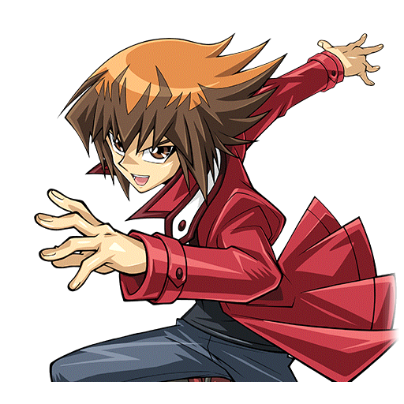
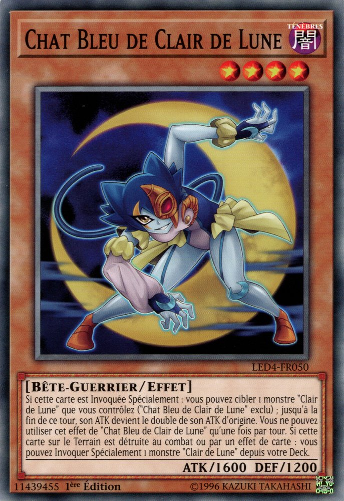
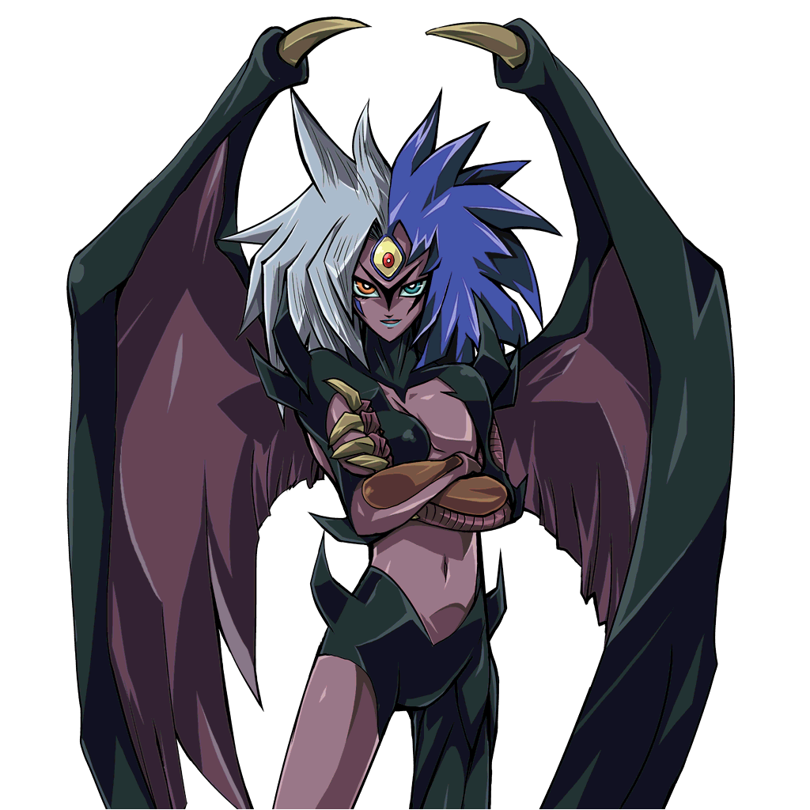
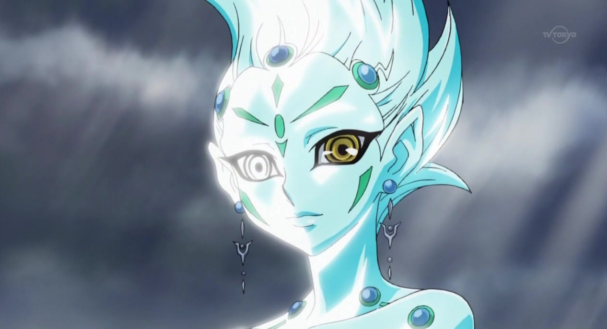
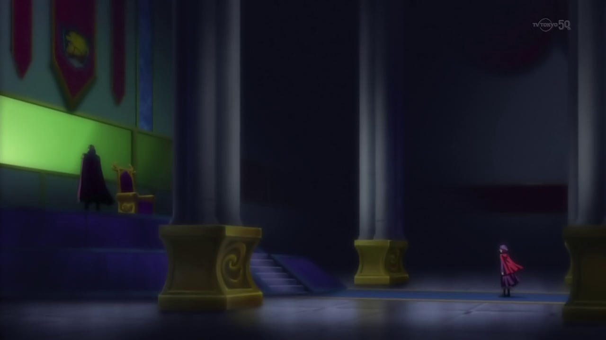
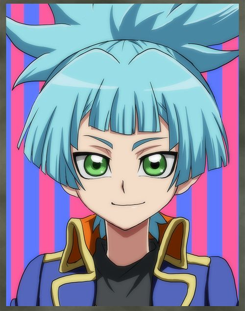

Judai announced to
Serena and the other students as they
arrived at their destination. After reaching the docks of the mainland, Judai led his group off the boat and followed him through the city and into the wilderness just
outside of town. He then took them up a trail leading them to a mountain with two large metal doors in front. This was where they had just stopped.
Serena: What is this place?
Serena asked in wonder.
You're about to find out. I just hope she's waiting for us inside.
Judai said as he opened the doors leading in.
Alex: Who? Alex asked.
As they entered, they saw that the inside looked like an
old church.
At the other end, someone was standing, smiling to see them.
???: Yuki Judai. I was beginning to wonder if you'd actually manage to escape at all.
The person that had spoken was a teenage girl with long, blonde hair and appeared to be Judai's age. When he reached her, Judai shook her hand, smiling back.
Judai: I told you I had a plan, Asuka. I had to duel someone to get everybody out, but hey, it all worked out.
He replied.
Asuka nodded and then took notice of the group.
Asuka: And these are the students you liberated? Demanda Asuka. She asked. Judai nodded as he turned them.
Judai: Everyone, this is Asuka Tenjoin. She escaped from Academia, just like the rest of you.
Judai started, and then motioned for Asuka to take over.
Asuka: When I first met him and told me and my Sensei what he had planned to do, I thought he was out of his mind. But, he told me to trust him, and so when he
infiltrated Academia, I was told to wait here each night until he got back with those imprisoned students. I'm really glad he succeeded.
Asuka explained as she then looked over Serena.
Asuka: You must be Serena, right?
Serena nodded, surprised Asuka knew her name.
Serena: I am. I'm pretty sure we've never met, though I think I saw you the day you've first arrived at Academia years ago.
She said. Asuka nodded.
Asuka: I'm glad you got away too, Serena. It can't be easy, defecting with the others...
It was then Serena interrupted her.
Serena: Who said I defected? The only reason I left with Judai is to test myself against strong Duelists and prove my worth!
She proudly stated. Serena expected Asuka to be shocked and begin to act suspicious toward her, but instead, she laughed softly.
Asuka: Judai told me you'd say something like that.
Asuka then looked confused.
Asuka: However, I am surprised that you're not against Akaba Leo, after learning what he plans to do to you...
Serena: What are you talking about?
Serena asked, surprised to hear that. Asuka then turned to Judai, who smiled sheepishly.
Judai: I haven't gotten around to telling her yet. He said with embarrassment.
The other students were now curious about what Judai and Asuka meant regarding Serena, especially Serena herself.
Serena: Telling me what? What big secret are you keeping from me this time?
Serena demanded. Judai sighed as he turned to Asuka.
Asuka, could you please take the others inside and get them settled? Tell him I'll be down with Serena in a minute.
Asuka nodded.
Asuka: Sure. Everyone aside from Serena, please follow me. I'll show you around and introduce you to the man I work with.
She then led Alex and his fellow runaways through a secret door that revealed a hidden staircase leading down. After they started down the stairs, the door closed back
automatically. Judai and Serena were now alone.
Serena: What the hell is going on, Judai? What did Asuka mean when she said the Professor plans to do something to me?
She looked angry again for being kept in the dark. Judai then looked back at Serena with a very serious expression.
Judai: Serena, I'm sorry I haven't been honest with you since we met. I had to maintain my cover while inside Academia. But from now on, I'll tell you nothing but
the truth.
He said.
Serena: Then tell me what I don't know!
Serena shouted. Judai took a deep breath and let it out before he started.
Judai: The truth is, freeing those students wasn't my real reason for getting inside Academia... you were.
Serena stood there, stunned by this revelation.
Serena: Me!? What do you mean!?
Judai: Here's the deal. Leo Akaba was NEVER going to let you join his soldiers for the Arc Area Project, no matter how much you want to prove yourself to him. He
plans to do something else, something that is ultimately going to end your life as you know it. I had to get you out of there before he could have a chance to do
so.
Judai revealed.
Serena was as still as a statue, shocked about what she had just heard.
Serena: The Professor...plans to...kill me?!
Judai then saw her ball up her fists in anger, and her body shaking.
Serena: Liar. LIAR! I don't believe you! The Professor would never... !
Judai: Why do you think he doesn't ever let you leave? Why does he always keep a close eye on you ever since you first arrived there? Tell me why he didn't let you
be part of the Xyz Dimension Invasion.
Judai asked harshly. Serena flinched from his tone.
Serena: How do you know all that? How the hell do you know so much about me when I know nothing about you?!
She countered. She had fully anticipated Judai would argue further, but once more, he surprised her.
Judai: When I was not much older than you, I also went to a
Dueling School
, on an island way out at sea. Only that Duel Academia…was completely different than the one here. In that school, I had the best 3 years of my life. I made lots
of friends, had fun and had exciting Duels and adventures. I even saved the world a few times while I was there. There were a few times I lost myself, but thanks
to my friends, I always came back.
Serena went wide-eyed with how open Judai was being with her.
Serena: Is he really serious? She wondered. Judai continued.
Judai: NO ONE was trained there to be heartless Duel Soldiers. No one there was harsh or cruel like that jerk Sanders. Also, the man
running that school is NOTHING like the one you look up to. He couldn't be any more different. Honestly, Academia would be much better off if he would be in charge.
Then, not too long ago, I learned about you from an outside source. That source told me what Leo Akaba was planning and asked me to rescue you, and so… here I am.
When Judai finally finished, he went quiet so that Serena could let it all sink in.
She could hardly believe what she had just learned about Judai's life. However, a part of her didn't want to believe his lies about the Professor and what he planned
for her. On the other hand, Judai didn't seem like a dishonest person. She still couldn't decide whether or not to believe him. Even so, his questions did bring back
an old memory from her childhood. If Judai was really willing to be so open and honest with her…
Serena: Three years ago, I tried to escape from Academia with some strange boy that came out of nowhere. We almost got away when the Professor caught us. He told
me that my future was in Academia and no where else. I demanded to know why he wouldn't let me leave if he understood my abilities. All he said was that it was not
the time to use them. I argued that it would be the right time, since the Xyz Dimension Invasion was about to begin. After having the
Obelisk Force
apprehend me, he told me he would find me no matter where I run. The Obelisk Force then dragged me back inside against my will. I never saw that unknown boy again
afterwards.
Her expression softened as she spoke.
Serena: The Professor never once told me what his reasons were for keeping me confined within Academia. He always kept to himself and didn't say anything other than
I had to stay.
She finished. Judai nodded.
Judai: He kept you around because he needs you for something other than being a loyal skillful soldier. He couldn't risk losing you until that need came.
After a moment, Serena started to scrunch up her face. To Judai's great surprise, he saw tears forming in her eyes.
Serena: How could he? After all the years I've trained, showing him how strong I have become? I've been nothing but loyal and dedicated to him and Academia! What
a waste! How could he... do that to me?!
She couldn't keep her feelings contained anymore as she began to cry. She felt ashamed of how she behaved, but she didn't care. Unexpectedly, Judai came to Serena and
hugged her tight. Instinctively, she hugged him back and cried onto his shoulder. Not another word was spoken as Judai allowed Serena to let out all her emotions.
Chapter 4: A most hurtful truth. A duel to bring back the smile.
After crying for a long while, Serena and Judai finally entered the underground complex behind the stairs. She said all she wanted to do was to go to bed, so Judai
complied. When they met up with Asuka, she agreed and then led Serena to a vacant room in the far back. The older girl provided her some pajamas and new clothes for
tomorrow.
Asuka: You've been through a lot, you should get some sleep. You can meet my teacher in the morning.
Serena thanked her and Judai for their kindness before closing the door, finally leaving her alone with her thoughts. After changing her clothes, she fell onto her bed and, with some difficulty, finally went to sleep.
Late the next morning, Serena woke up still feeling upset and depressed about the Professor's betrayal. While taking a shower, she came to the decision to never go
back to Academia, not while the Professor... Akaba Leo, was still in charge.
Serena: He's not the "Professor" to me anymore. I can't be loyal to someone who only wants to use me for some sick plan that will end up killing me.
As much as she hated thinking about it, she should ask Judai what exactly Akaba Leo's true plans for her were.
After her shower, she put on the clothes Asuka left for her. She now wore a simple red jacket, a broad grey skirt, a black vest that is half unzipped over a white
shirt and large black and red boots. And of course, she wrapped her hair in a ponytail with her yellow ribbon. She looked at herself in the mirror and actually liked
what she saw. In her reflection, there was no trace of Academia on her anywhere.
Serena was slightly startled when she heard someone knocking on her door.
Asuka: Serena? It's Asuka. Are you awake yet?
Serena: Door's open. Serena replied, allowing Asuka to come in. The older girl smiled as she saw Serena's new outfit.
Asuka: That look suits you. Asuka commented. Serena smiled back.
Serena: I agree. Thanks. So, have I missed breakfast yet? The younger girl asked as she felt her stomach rumbling. Asuka laughed a little.
Asuka: Actually, we were just about to start. Follow me.
She then lead Serena to a big area where all the runaways were eating, along with Judai. He had just barely sat down when he spotted the girls.
Judai: Yo! Serena! Asuka! Come get some grub and join us! He said while waving at them.
Once they got their own trays of hot food, Asuka and Serena joined Judai at the table he was at.
Judai: Glad you could make it, Serena! How're you, uh... feeling? The older boy asked tentatively, remembering how devastated she was the previous night.
Serena: I'm... okay.
She said before she started eating. Judai and Asuka ate their meals too. They decided to let her eat in silence, knowing she had a lot on her mind right then. It wasn't
long before they all cleaned their plates. When she was finished, Serena looked up at Judai.
Serena: Judai, I still have questions I want answered. Judai understood as he nodded.
Judai: Shoot. He said, inviting her to ask away.
Serena: First of all, how did you manage to infiltrate Academia to begin with? All the new students are usually much younger. I was little myself when I first
entered. You, however, are clearly older. How were you accepted?
Judai shrugged.
Judai: Passed off as a Transfer Student from another school. Even though I was older than the other kids, I was technically a freshmen since it would be my first
year there. Although, after last night, I don't think they'll allow anymore transfers for quite a long while.
He said as he laughed, making Asuka and Serena smile.
Serena: Definitely not. Her smile quickly faded when she asked her next question.
Serena: What does the Prof… Leo Akaba, really want with me? What are his real plans?
Judai looked a little uncomfortable, even though he expected Serena to ask that sooner or later. Still, he had to tell her something.
Judai: That is a VERY long story. It would be best if... everyone was together for that tale.
Serena: What do you mean "everyone"? Serena asked, now more curious. Asuka was also interested to know.
Judai: You're not the only one who's life is in danger, Serena. There are 3 other girls, one in each of the other Dimensions, that also have to be protected from Akaba Leo.
The good thing is that each girl also has someone to help them out when the time is right, like me. Once all the girls are rescued, we'll meet up with them and their
protectors so that everyone can hear the story at the same time.
Serena was really stunned to learn that there were other girls being targeted by her former teacher. Why were these other girls so special? Why was she herself so
special? What kind of connection could they possibly have that separated them from all others?
Judai: Oh, I should probably mention that each of the girls will also have a boy that fled with them. Those boys also have a connection with them, so they'll have to be in on the loop too.
Judai added.
Serena: What boys? Are they in danger too? And who's the boy that needs to be with me? Serena asked, looking at all the other boy students around the place.
Judai: Actually, you're the exception. You won't have a boy coming along with you... if you don't count me that is.
Judai said with a chuckle. Serena widened her eyes in fear.
Serena: Did something already happen to the boy that's connected to me?
Serena started to worry that Leo may have already gotten to that boy. Judai then looked unusually grim.
Judai: You could say that. He said softly.
Judai: That boy, the one you share a "certain" connection with... is completely loyal to Leo Akaba. There's no chance of turning him; he's too far gone on the crazy express.
Serena was shocked, along with Asuka.
Asuka: Judai, who is the boy that you're talking about?
Asuka asked. Judai hesitated, making both girls more nervous. Fortunately, he was spared from answering it when the other students all yelled:
Students: Sensei!
The trio turned to see an older man entering the area.
This dark haired man looked like a performer at a circus. He wore a dark red suit and a purple top hat. He also had a cane, which he used to support himself, seeing as
he hobbled a bit. Clearly he hurt one of his legs recently and it had not yet fully healed.
Serena: Is that this "Sensei" you mentioned before, Asuka? Serena asked the man made his way to them. Asuka nodded with a smile.
Asuka: Yes. His name is Sakaki Yusho. He's helped everyone here, including me.
Just then, Yusho sat down beside Judai and across from Asuka and Serena. He smiled and greeted Serena. When he first saw her, he had to remind himself that while they
shared the same face, she wasn't the
young girl
he knew back in his old home. Judai had mentioned this prior to his infiltration mission.
Yusho: You must be Serena. Welcome to my "You Show Duel School". He said warmly.
Serena: "You Show Duel School"? Is that what this place is? Serena asked. Yusho nodded.
Yusho: I founded it, with Asuka's help, to hide and teach all the students who were lucky to escape Academia. Here, they are taught to have fun in their Duels and
make everyone smile. In turn, they learn to smile for themselves, knowing they bring joy and happiness to others.
Serena smiled again.
Serena: Judai told me he went to a school that taught their students in a similar way.
Yusho: He mentioned that as well when we first met. Yusho then looked around at the students that seemed happy.
Yusho: Aside from the group Judai brought here, every one of these students had the misfortune of taking part in the first Invasion of the Xyz Dimension.
Serena: They did? Serena gasped as she looked around again.
Yusho: The experience traumatized them, made them see how wrong their school's actions really are. I can understand them, seeing as I was also there when it occurred.
Serena stared back at Yusho with further surprise.
Serena: You're from the Xyz Dimension?! Yusho shook his head this time.
Yusho: No, not originally. I actually came from the Standard Dimension, where my wife and son currently are.
Serena: You have a family there? How come you left them? Serena asked.
Yusho: It started not long after I developed Solid Vision with my old friend and partner... Akaba Leo.
Serena's jaw dropped.
Serena: You and he were... friends?! She asked in shock.
Yusho: Please understand. At the time Leo was not the same person as you know him now. We had actually gotten along really well and developed Action Duels together.
Yusho said, remembering the good old days.
Serena: What are Action Duels? Serena had never heard of a Duel like that.
Yusho: I'll explain it more later. Leo disappeared one day, vanished without a trace. Then, three years ago, I was called by his son,
Akaba Reiji, to meet with him about his father.
Serena: Reiji? Wait, I remember that Leo Akaba had a son too. I met him when I tried to escape from Academia! This was also three years ago!
Yusho: Indeed. Leo used a miniature transporter to send Reiji back to Standard and made sure he couldn't return to Academia. It was then that he told me what he
found out from his father's research on the Four Dimensions and what his goals were. He was planning to put together a strong team of Duelists called Lancers to
fight against Leo and stop his ambitions. Reiji also asked me to lead those Duelists, but I wanted to try talking to my old friend myself. I used the
Interdimensional Travel Device Reiji's research team developed to travel to where he was, despite their protests. However, instead of Academia, I arrived in the
Xyz Dimension. Without any way of leaving, I had spent the next three years there teaching young Duelists my philosophy on making people smile through Duels.
Serena was about to ask him how he came to the Fusion Dimension, when she had a more important question for him.
Serena: Yesterday, Judai told all the students listening in Academia that all people in the Xyz Dimension, not just Duelists, were being attacked and sealed into
cards. He said the invading forces caused a lot of destruction and that they treated the Invasion like it was a hunting game, treating the fleeing survivors like
prey and taking sick pleasure in it. Is all that... really true?
Serena questioned. She figured Yusho had to give her the answer if he really was in the Xyz Dimension when it happened. Yusho closed his eyes and lowered his face, appearing sad.
Serena: Yes Serena. What you've heard is true. During the attack, I was forced to witness those atrocities without being able to do anything to stop them. It was a
nightmare made reality. It disgusted me what Academia was doing, and the fact that Leo, my old friend, was responsible made my pain even worse. I did what I could
to help the survivors before I ended up here.
Yusho said heavily.
Serena saw that Yusho had meant every word. She now felt true sorrow, not just for the students who regretted being part of the Invasion, but for everyone who suffered
in the Xyz Dimension because of it. This cemented her decision to not go back to Academia even further. More so, she wanted to make Leo Akaba pay for all the wrongs he
caused. Not just to her, but to everyone he victimized, as well as those he was personally targeting. It was a long moment before she found her voice again.
Serena: So then, how did you come here to the Fusion Dimension? Serena finally asked. Yusho looked backed up again as he answered.
Yusho: During the Invasion, I dueled against Academia's Commander-In-Chief, Edo Phoenix. He then pulled out a card from his pocket that got torn in half.
Yusho: It was also during that Duel that I suffered my injury. Yusho said as he rubbed his aching leg.
Yusho: When I defeated Edo, I tried to show him that Leo's teachings were wrong and that Duels shouldn't be used to hurt others. I could tell he was torn between
his loyalty to Academia and his desire to smile. I offered him my card,
“Smile World ”
, to help convince him. In his frustration, Edo ripped half of it off. It was then that I somehow got transported here to the Fusion Dimension, my original
destination. I supposed that he must've sent me here by accident.
Serena was amazed that the man sitting before her actually fought and defeated the Commander-in-Chief of Academia's Invasion force.
Serena: He must be a really strong Duelist to accomplish that!
It was then that Serena had to see his skills first hand.
Serena: Sakaki Yusho. I challenge you to a Duel! She boldly declared, getting everyone's attention. Yusho seemed surprised, but he also looked delighted as he stood up.
Yusho: A Duel, huh? That actually sounds like a fun idea. I accept, young lady.
He said with a bow. Serena smiled, getting a chance to prove herself against a potentially strong opponent. Judai and Asuka smiled too as they thought this was going to be very fun to watch.
A short time later, Serena and Yusho stood before each other, ready for their match. Judai, Asuka, Alex, and all the other students gathered to watch their Sensei in action.
Young boy: Man, this is going to be so awesome! Said a boy next to Alex.
Young girl: I can't wait! Sensei's Duels are always fun to witness! Said a dark haired girl. They all waited eagerly for the two to begin.
Yusho: Ready for the fun to begin? Yusho asked. Serena smirked.
Serena: Show me what you've got! She replied as both Duelists activated their Duel Disks.
Serena: I'll take the first turn! My turn! I play,
“Yugo ”
!It let me fuse
“Moonlight Blue Cat ”
and
“Moonlight White Rabbit ”
in my hand! The cat prowling in the azure darkness! The lively white rabbit illuminated by moonlight! Swarm in a vortex of the moon's gravity and revive with a new
power! Yugo Shokan ! Come forth!
“Moonlight Cat Dancer ”!
A purple cat humanoid now appeared wearing garments that represented the moon while wielding two swords.
Serena: I Set 1 card facedown and end my turn! Don't hold back on me!
Serena demanded in a challenging tone. Yusho smiled.
Yusho: Let's see if I can get her to loosen up a bit. My turn!Draw!
Serena waited to see what Yusho was capable of. His opening move surprised her.
Yusho: I Set 1 card facedown and end my turn.
Serena: You didn't Summon any Monsters? Serena asked. Yusho chuckled.
Yusho: That would be what you'd expect from your opponent. But, as you're about to see in this Duel, you can't always anticipate what you will be dealing with next! Let us see what the outcome shall be! Serena grunted.
Serena: I told you not to hold back, old man! Now you're going to get it! My turn!Draw!
Serena: What the? Yusho then laughed at Serena's reaction.
Yusho: It's time to have fun Serena! When my opponent launches an attack,
“Miracle Silk Hat ”
let's me choose a Monster and a Magic or Trap in my hand and Special Summon them to my Field as Normal Monsters, in the form of these hats! But there is more! This
turn you can only attack with one Monster, and both the cards I chose will be destroyed at the end of the Battle Phase!
Serena then guessed what he was getting at.
Serena: So now I can only attack one of those hats, and I assume one will let me damage you.
Yusho:Correct! If the hat you attack contains a Monster, any battle damage this turn will be doubled!
But if it turns out to be a Magic or Trap, neither of us take battle damage this turn! So, which will it be? It's your choice...
Yusho said with a wink.
Serena looked from one hat to the other, wondering which one she should attack. She had no hint of which hat was the Monster Yusho had picked. Even Judai and Asuka
were at a loss. If Serena guessed right, the damage from her attack would be more than enough to defeat Yusho and win the Duel. Still, it would disappoint her to end
the Duel so soon after hearing how her opponent managed to take down Edo Phoenix. Regardless of the outcome, she had to make a choice...
Yusho: First I'll play
“Goyoku na Tsubo ”
, which allows me to draw 2 more cards.
Yusho smiled at what he got, knowing it will make Serena enjoy the Duel more.
Yusho: Next comes my opening performer! When my opponent has 1 Monster on their Field while I have none, I can Special Summon “Entermate Revue Dancer ”
from my hand!
A young dark skinned woman dressed in orange and green appeared and handled a whip.
Serena: She doesn't seem so threatening. erena muttered. Yusho then waved a finger.
Yusho: I did say she was my opener. When I'm about to Advance Summon a "Entermate" Monster,
“Revue Dancer ”
can be used as two Tributes.Now comes the main star of today's Duel! I Release
“Entermate Revue Dancer ”
to Advance Summon the one, the only... “Entermate Sky Magician ”
!
Yusho's Ace Monster appeared as a white legless mage with huge wings and carried a set of interconnecting rings. Everyone cheered when they saw it, including Judai and Asuka.
Young Girl: There it is! Sensei's Ace Monster! One girl cried out in joy.
Serena herself couldn't help but smile that Yusho was finally getting serious.
Serena: So that's his ace, is it? I wonder if it is just as tricky as it's master is... Serena thought.
Yusho: Now I play the Magic card:
“Clairvoyance ”
! Now it's my turn to make a choice! This time, I choose one of your facedown cards on the Field and try to guess what type it is. If I'm right, that card gets
shuffled into your Deck, and if it does, I get to draw 2 cards.
If not, that card gets Set back on the Field and you get to draw 2 cards. I'll pick the card on your left. Let us see now...
Yusho then studied Serena's facedown card. Serena was slightly wary. There was no way he could know what her facedown card was. Yusho had a 50/50 chance of getting it
right, like what Serena had with those hats.
Yusho: I believe that facedown card... is a Trap!
Yusho declared. Serena smirked triumphantly.
Serena: Wrong guess.
She declared as she revealed her card to be a Magic card called
“Shisha Sosei ”.
Yusho did seem disappointed, but not by much. He merely chuckled.
Yusho: Hohoho! Sometimes we get it right, sometimes we don't. Even I mess up from time to time!
Serena: Thanks to your poor guessing, I get to keep my Magic card and draw 2 more cards from my Deck! Serena said as she drew her cards.
Yusho: I play a Continuous Magic card called
“Majutsushi no Hidarite ”
!At this time, the Effect of
“Entermate Sky Magician ”
activates! When I play a Continuous Magic card, it's Attack Points go up by 300!
(Entermate Sky Magician: 2500 + 300 = 2800 ATK)
Serena: He always has something up his sleeve, doesn't he? Serena thought to herself.
Sky Magician flew forward and blew apart Serena's Fusion Monster.
(Serena : 4000 LP - 400 LP = 3600 LP)
Serena: Trap card open,
“Moonlight Reincarnation Dance ”
. ! When a "Moonlight" Monster is destroyed, I can take 2 "Moonlight" Monsters from my Deck and add them to my hand!
Serena revealed her other facedown card, but it did her no good.
Yusho: Now the effect of
“Majutsushi no Hidarite ”
activates! Once per turn, when my opponent plays a Trap card while I have a "Spellcaster" on my Field, I can negate that Trap and destroy it!
Yusho countered, destroying Serena's Trap.
Serena: Damn. He somehow knew my other card was a Trap, that's why he played that particular card.
Yusho: I end my turn.
Yusho: So tell me Serena... are you having fun yet? He asked in a playful tone. Serena smiled at him.
Serene: What do you think? She asked back. Yusho laughed.
Yusho: You remind me so much of a young girl I knew back home. And let me tell you... whenever I saw that smile on her face, I knew she was having a fun time. That's
why I know... that you're enjoying yourself as well, even if you're trying to hide it!
He said with another wink.
Serena was caught off guard that Yusho could read her so well. But it didn't really matter. The truth was, she actually was having fun in this Duel. She started to
wonder if this was how Judai felt every time he dueled...
Serena: Let's see if you have fun after this! My turn! Draw!
Serena: Now I activate my facedown Magic card,
“Shisha Sosei ”
. This will let me...
Yusho:
“Entermate Sky Magician ”
's Monster Effect! Once per turn, during either player's turn, when a Magic or Trap is activated, I can take a Continuous Magic card on my field and switch it with
another one in my hand! I return
“Majutsushi no Hidarite ”
to my hand and replace it with
“Majutsushi no Migite ”
!
Since I have a "Spellcaster" monster on my field, once per turn I can negate the activation of an opponent's Spell card and destroy it.
As you can see, this new card has the same effect as the previous one, but it affects the magic cards! So now,
“Shisha Sosei ”
is negated and destroyed! And since I played a new Continuous Magic card,
“Sky Magician ”
gets another 300 Attack Points!
(Entermate Sky Magician: 2800 + 300 = 3100 ATK)
Yusho revealed, as Serena's magic card was destroyed. However, Serena smirked.
Serena: I got you! Yusho looked at her, confused.
Yusho: How so? He asked.
Serena: I could tell early on in the Duel that you would be difficult to predict. So, I wondered what you would do. Your previous Magic card was called
“Majutsushi no Hidarite ”
, which could negate Traps. I had a hunch that you had a
“Migite ”
card that could negate Magic cards and that your Magician was the key to using them. Like I figured,
“Sky Magician ”
allowed you to switch cards depending on the situation! Well, now that the effects of both “Sky Magician ”
and
“Majutsushi no Migite ”
have been used this turn, I can play more Magic cards without any further switches on your part!
Serena said excitedly.
Yusho was impressed by Serena's reasoning and smiled as a result.
Yusho: Then please, so us how much you're having fun! He said to her, getting a nod in return.
Serena: You got it, old man! Now I activate
“Gekkoga ”
from my hand! This will let me Special Summon a "Moonlight" Monster from my Graveyard to the Field!Return to me,
“Moonlight Cat Dancer ”
!
Serena's Ace Monster was now back on the Field.
Alex: But
“Sky Magician ”
's Attack Power is much higher than
“Cat Dancer ”
's now. How is Serena going to beat it?
Alex asked.
Judai: I think we are about to find out. Judai said with a smile of his own.
Serena: I activate another
“Gekkoga ”
, which I will use to bring back one of
“Cat Dancer ”
's Fusion Materials! Return, “Moonlight Blue Cat ”
!
Standing alongside Cat Dancer was a blue and white cat in human form wearing a half moon mask.
Serena: Now from my hand, I Normal Summon
“Moonlight Purple Butterfly ”
!
A purple human butterfly next appeared with it's brethren.
Asuka: None of those Monsters can defeat
“Sky Magician ”
. What's she planning?
Serena: I activate
“Purple Butterfly ”
's Monster Effect! By Sacrificing it, I can increase the Attack Power of a Fusion Monster by 1000! Now my “Cat Dancer ”
gets stronger!
(Moonlight Cat Dancer: 2400 + 1000 = 3400 ATK)
Yusho smiled as he watched.
Serena: Next is the Effect of
“Moonlight Blue Cat ”
. Since
“Blue Cat ”
was special summoned, until the end of this turn, it can double the Attack Points of a "Moonlight" Monster on my Field! I choose
“Cat Dancer ”
!
Everyone watched Serena's Fusion Monster becoming even more powerful.
(Moonlight Cat Dancer: 3400 x 2 = 6800 ATK)
Alex: It's Attack Power is nearly at 7000! That's nuts! A stunned Alex said.
Serena: Finally,
“Cat Dancer ”
's Effect! By Sacrificing a "Moonlight" Monster on my Field, like
“Blue Cat ”
she can attack all my opponent's Monsters twice each!However, those Monsters are not destroyed from the first battles!
Asuka: With her Monster so much stronger now and able to attack
“Sky Magician ”
twice...
Asuka started.
Judai: Yep, my thoughts exactly.
Judai said with a grin. Yusho realized the same thing they did and felt he did his job well with helping Serena. He merely smiled and slightly lowered his head.
Sky Magician withstood the first attack like Serena said, but it was easily slashed to ribbons in the second and final assault.
(Yusho : 4000 LP - 3700 LP - 3700 LP = 0 LP)
Everyone was silent, stunned by the outcome of the Duel. Serena then approached Yusho, held out her hand, and smiled. Not her usual smug, confident smile she often
used, but a genuine warm smile. She seemed truly happy.
Serena: Sakaki Yusho, I don't think I've ever had a Duel this enjoyable in my life. Thank you for that.
Yusho gave a warm smile of his own as he shook Serena's hand.
Yusho: I'm glad we both had fun today.
Everyone then cheered and applauded the two for an amazing Duel. Judai actually whistled. Inside, Serena wanted to have more Duels like the one she just had with Yusho.
She was thinking of asking Judai to take her to the school he went to when they heard a loud crashing noise from above.
Alex: What was that? Asked a very nervous Alex.
Everyone stayed silent as they heard yet another crash upstairs. This got them starting to panic.
Yusho: They've found us. Yusho said softly, making Serena and the others gasp.
Serena: But how? How did Academia know where we are? Serena asked, fearing that she was the cause.
Judai: It doesn't matter. We all need to leave now.
Judai said as he took out his Duel Disk and pushed a hidden button on the edge. The blue sphere in the center started blinking green.
Asuka: What is that? Asuka asked, never seeing a Duel Disk do that before.
Judai: It's a beacon. Me and my other friends have one installed in our Duel Disks for occasions like this. Now our ride outta here will be coming in a few minutes, so we have to be outside when it shows up.
Serena: What ride? Serena asked.
Judai: Let's just say it's out of this world. Judai hinted with a smile.
Alex: Is there another way out? lex questioned, still afraid to be caught and dragged back to Academia. Or worse, being sealed in a card.
Asuka: There is a hidden tunnel that leads out into town. Whatever Judai's ride is, that's where we will be waiting for it.
Asuka answered, preparing to help Yusho lead the others out.
Judai: Then you better get going. Judai said as he handed his Duel Disk to Asuka.
Asuka: What're you doing? Aren't you coming? She asked, now concerned.
Judai: I'll slow them down, giving you guys enough time to get to the end of the tunnel. You hold on to the beacon so that the ship can find your exact location. Judai instructed, shocking the group.
Serena: No Judai! We're not leaving without you, especially if you'll be unarmed! Serena protested.
Yusho: He won't be. Yusho declared as he handed Judai his own Duel Disk.
Yusho: I trust you, Judai Yuki. Thank you for everything. Judai nodded to the Entertainer.
Judai: No prob. Good luck everyone.
Judai said as he turned to head upstairs. Serena still didn't want to leave him behind to face the enemy alone.
Serena: Judai! I'll stay with you! Judai looked back at her, looking resolute.
Judai: No way. You're the one they want the most, even more than me. You HAVE to go Serena! Now! Judai ordered.
Serena: But!
Serena tried to argue further, but Yusho placed a hand on her shoulder and shook his head. Serena gritted her teeth, frustrated that she had to flee without her first
real friend. Finally she gave up and accepted his choice.
Serena: Judai... please don't get carded.
She requested softly. Judai smirked and gave a thumbs up as he went up the stairs.
Asuka: Alright everyone, follow us! Quickly! Asuka barked as the whole student body followed her and Yusho down the tunnel. Serena hesitated for another second before fleeing with them.
When Judai returned to the church upstairs, he saw a dozen members of the Obelisk Force waiting for him at the doors leading outside. In front of the soldiers was none
other than the very boy Judai didn't want to mention to Serena and Asuka.
Judai: Nice of you to stop by, Yuri.
He said as he calmly walked towards him.
Yuri smiled maliciously.
Yuri: Ah, the infamous Yuki Judai. I heard about all the trouble you caused at Academia, not the least of which was destroying the main Interdimensional Transporter.
The Professor certainly wasn't happy about it.
Judai smirked.
Judai: Really? I kinda thought losing Serena would piss him off the most. Yuri then frowned.
Yuri: It did, actually. That topped every other stunt you pulled. I'm here to bring her back, and...
He then smiled again with twisted pleasure as he raised his own Duel Disk.
Yuri: I've been ordered to card you on sight. Normally I'd like to play with my prey with a Duel before sealing them, but the Professor was adamant that you have
been deemed too great a threat to deal with lightly.
Judai: Glad to hear Leo likes me so much. Before you get to the sealing thing, could you explain how you managed to track us here? It's pretty off the map if you
know what I mean.
Judai asked as he slipped on the Duel Disk he borrowed from Yusho.
Yuri: That was simple. Other runaways have been spotted coming up this way in the past. Thanks to some tips from the locals, it wasn't hard to find your little hideout.
Yuri chuckled.
Yuri: My turn to ask. Where is Serena?
Judai: Hopefully, long gone by now. You'll never take her back to Academia, and Leo Akaba will never get what he wants.
Judai boldly declared when he stopped just a few feet away. Yuri chuckled again.
Yuri: Ha ha ha ha ha, You're a funny guy. I would love to have toyed with you. But alas, this is not planned.
Raising his arm and preparing to activate the sealing device, Yuri addressed Judai one last time.
Yuri: Goodbye forever, Yuki Ju... huh ? Yuri was about to push the button that would seal someone in a card when something very unexpected happened.
The atmosphere in the area had suddenly gotten intense and everyone felt a sharp chill down their spine. Yuri and the whole Obelisk Force also began to feel a growing,
ominous fear. The source of these anomalies was none other than Judai himself. To the shock of Yuri and his subordinates, Judai's eyes changed from brown to a dark
golden color and had a strong aura appear around him.
Judai: Yuri, you and your Obelisk Force represent the very evil within this Dimension. Guys like you need to be punished!
JJudai stated strongly as he Summoned a Monster they all had never seen. It appeared to be a dark skinned female demon with wings. She floated above Judai and looked down at his enemies with her orange and green eyes. The smile she wore wasn't a friendly one.
Obelisk Force: Wh... What is that?! One of the Obelisk Force soldiers asked in sheer terror.
Yubel: Shall I teach them a lesson, Judai? Asked the creature, business like.
Judai: Just knock out the Obelisk Force, Yubel. I've got Yuri.
Judai ordered in a cold tone. With a quick assault, Yubel rendered them all unconscious, but otherwise unharmed. Yuri, at this point, began to step back as Judai came
near him again.
Yuri: Wh...What... are... you? He asked in a shaky voice. For the first time in his life, Yuri was afraid... truly afraid.
Judai: This may sound a bit cliché but: I'm your worst nightmare!
Judai shouted as he, with an unseen force, blasted Yuri out of the church and sent him crumbling down the stairs. When he finally stopped, he too was out cold. Judai
looked down at him with disgust before he calmed down and his eyes returned to normal.
Yubel: That was fun. Yubel commented.
Judai: I've wanted a shot at him. Okay Yubel, time for our escape too. Judai said he headed back down to the tunnel with Yubel disappearing out of sight.
Back with Yusho's group, they had just made it out of the tunnel when they saw the "ride" Judai had said would pick them up. The sight floored them.
Serena: What the hell is THAT?! Serena exclaimed in shock.
Alex: It looks like... some kind of space ship! Alex guessed.
Within seconds, the mystery ship hovered over the group and covered them in green light. After that, they were contacted...
???: Whoever is in possession of this Duel Disk, please respond. A stunned Asuka, hesitant at first, decided to reply.
Asuka: H-Hello?
???: What is the situation? Where is Yuki Judai?
The new voice demanded. It was Serena who chose to answer, since she was reason Judai came here in the first place.
Serena: This is Serena. Judai's not with us. He's trying to delay Academia's forces so that we could escape.
The new voice's tone softened a bit.
???: Serena, I'm pleased Judai had managed to convince you of the truth. But I must admit, I was not anticipating a mass rescue.
Serena: Things got complicated. Serena simply said.
???: Let me repeat my previous question: Where is Yuki Judai? She was about to answer that when...
Alex: There!
Alex shouted, pointing behind their group. Serena, Asuka, Yusho, and the others saw Judai himself running out from the tunnel. They were all happy to see him return.
Serena: He just got back! He's with us now! Serena said in total relief. As they met up, Judai gave Yusho back his Duel Disk while he was given his own back from Asuka.
Judai: Thanks for holding on to this. Judai said. Asuka nodding with a smile.
???: Judai, are you alright?
Judai: I'm good now, Astral. Let's get out of here!
Astral: Agreed. Standby.
Astral replied as the light then turned red. As they waited, Judai turned to Serena, who was glad he made it back to them safely.
Serena: Good thing you're okay Judai, or I'd have to come back to get you myself. Serena said in a stubborn, but friendly tone. Judai smiled.
Judai: Same here.
Seconds later, everyone got transferred aboard the massive ship, which flew up and disappeared in big flash of light.

Leo: They've escaped?! Including Serena?!
Leo was beside himself with fury in his throne room. Yuri stood before him, looking frustrated himself.
Yuri: After regaining consciousness, my forces and I searched the whole complex. There was no one there. As we made our way out, I saw a huge ship flying away. I
recognized it. It was the same one that made such a hasty departure from the Xyz Dimension.
Yuri reported. Leo looked like he wanted to strangle someone.
Once again, he had lost a piece he needed for his daughter's revival. Except this time, that piece had already been in his possession. Serena had been taken from him
right under his nose. After hearing of the fleeing ship, he became convinced of one undeniable fact: The Duelists that have kept Ray's fragments from him knew of his
plans and were indeed working together to stop him. He knew what he had to do next to ensure Ray's final fragment didn't escape him as well.
Leo: Summon Shiunin Sora back from Dimension Standard! Now!
 and the other students as they
arrived at their destination. After reaching the docks of the mainland, Judai led his group off the boat and followed him through the city and into the wilderness just
outside of town. He then took them up a trail leading them to a mountain with two large metal doors in front. This was where they had just stopped.
and the other students as they
arrived at their destination. After reaching the docks of the mainland, Judai led his group off the boat and followed him through the city and into the wilderness just
outside of town. He then took them up a trail leading them to a mountain with two large metal doors in front. This was where they had just stopped.


.png)